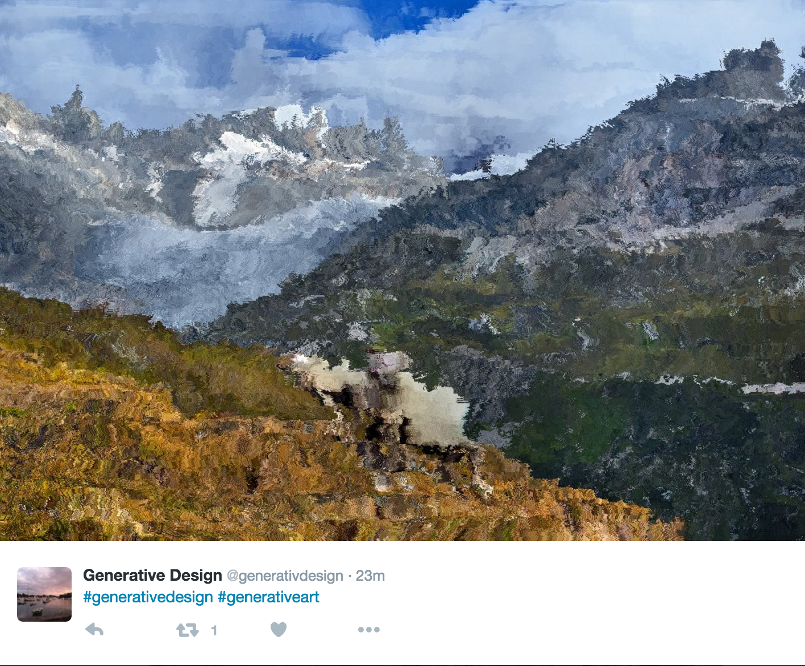

Ondina Frate
Ondina Frate
TITLE: Generative Design
CATEGORY: Twitter Bot
DATE: October 2016
TOOLS: Processing, Node.js, Twitter API, Flickr API
COLLABORATORS: None
DESCRIPTION:
'Generative Design' is a Processing bot that takes the latest abstract pictures from Flickr using an API and re-designs them by shifting groups of pixels randomly to the left and right. You can check out more generative design pictures on the actual Twitter bot by following @generativdesign.
